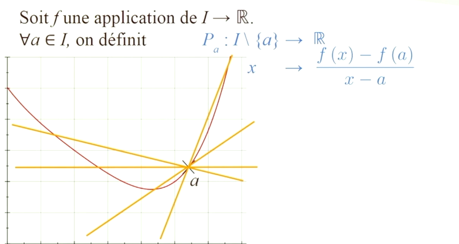

Définition de la convexité et Application à la Pente des Cordes
Pour tout \(a\in I\),on définit une fonction \(P_{a}\) (taux
d'accroissement) de \(I\setminus \{a\}\rightarrow \mathbf{R}\) par \(P_{a}(x)=\frac{f(x)-f(a)}{x-a}\).
La
condition pour que \(f\) soit convexe est que, pour tout \(a\in I\), la fonction \(P_{a}\) soit croissante sur
\(I\setminus \{a\}\).

Démonstration de lexercice
Ben Ftima Mohamed +216 21409061 +whatsApp
Démontrer l'inégalité pour une fonction convexe
Step 1: Comprendre l'énoncé et les hypothèses
On
suppose que (\(x<y<a)\)
et on cherche à démontrer l'inégalité suivante : \(\frac{f(a)-f(x)}{a-x}\le \frac{f(a)-f(y)}{a-y}\)
Cette
inégalité est équivalente à : \((f(a)-f(x))\times \frac{a-y}{a-x}\le f(a)-f(y)\)
Step 2: Utiliser la convexité de la
fonction On pose \(t=\frac{a-y}{a-x}\).
Comme \(x<y<a)\), on a \(0<a-y<a-x\), donc \(t\in
]0,1[\).
L'inégalité à
prouver devient : \(f(a)-f(x)\times t\le f(a)-f(y)\)
\(f(y)\le f(a)-t(f(a)-f(x))\)
\(f(y)\le
(1-t)f(a)+tf(x)\)
On
sait que si \(f\) est une fonction convexe, alors pour tout \(t\in [0,1]\), on a \(f((1-t)a+tx)\le
(1-t)f(a)+tf(x)\).
Step 3: Vérifier l'égalité des points Il suffit de vérifier que le point \((1-t)a+tx\) est égal à
\(y\).
\((1-t)a+tx=a-ta+tx=a-t(a-x)\)
En remplaçant \(t\) par sa valeur \(\frac{a-y}{a-x}\) :
\(a-\frac{a-y}{a-x}(a-x)=a-(a-y)=a-a+y=y\) Puisque \((1-t)a+tx=y\),
l'inégalité de convexité
\(f((1-t)a+tx)\le
(1-t)f(a)+tf(x)\) devient \(f(y)\le (1-t)f(a)+tf(x)\),
ce qui est exactement l'inégalité que l'on voulait
démontrer.
Answer: L'inégalité \(\frac{f(a)-f(x)}{a-x}\le \frac{f(a)-f(y)}{a-y}\) est démontrée en utilisant la définition de
la convexité de la fonction \(f\).
Analyse de l'exercice et explication detaillée
La
condition pour que \(f\) soit convexe est que, pour tout \(a\in I\), la fonction \(P_{a}\) soit croissante sur
\(I\setminus \{a\}\).
Définition de la convexité : L'image illustre la définition de la convexité d'une fonction \(f\) sur un intervalle
\(I\) à l'aide du taux d'accroissement en un point \(a\).
L'image présente les éléments suivants : Une fonction \(f\) est une
application de \(I\rightarrow \mathbf{R}\). Pour tout \(a\in I\),on définit une fonction \(P_{a}\) (taux
d'accroissement) de \(I\setminus \{a\}\rightarrow \mathbf{R}\) par \(P_{a}(x)=\frac{f(x)-f(a)}{x-a}\).
Graphiquement,
\(P_{a}(x)\) représente la pente de la sécante passant par les points \((a,f(a))\) et \((x,f(x))\) de la courbe.
La
condition pour que \(f\) soit convexe est que, pour tout \(a\in I\), la fonction \(P_{a}\) soit croissante sur
\(I\setminus \{a\}\).
Visuellement, cela signifie que les pentes des sécantes "tournent" dans le sens antihoraire à
mesure que \(x\) augmente, ou que toutes les sécantes restent "au-dessus" de la courbe à partir du point \(a\).
Définition de fonction convexe Answer: Une application \(f:I\rightarrow \mathbf{R}\) est dite convexe lorsque l'ensemble
\(\{(x,y)\in I\times \mathbf{R}\mid y\ge f(x)\}\) est convexe.
Points clés de la 1ére démonstration
Hypothèse de base :
On suppose que la fonction \(f\) est convexe sur un intervalle
\(I\).
Conditions des points : Trois points \(x\), \(y\), et \(a\) sont choisis tels que \(x<y<a)\)
appartiennent à
\(I\).
Définition de la convexité : Le point \(y\) est exprimé comme une combinaison convexe de \(a\) et \(x\) à
l'aide d'un coefficient \(\lambda=\frac{a-y}{a-x}\in ]0,1[\).Application de l'inégalité :
L'inégalité de convexité
\(f((1-\lambda )a+\lambda x)\le (1-\lambda )f(a)+\lambda f(x)\) est appliquée.
Résultat principal : Après
simplification algébrique, l'inégalité finale suivante est obtenue, montrant que la pente entre \(x\) et \(a\) est
inférieure ou égale à la pente entre \(y\) et \(a\):\(\frac{f(x)-f(a)}{x-a}\le \frac{f(y)-f(a)}{y-a}\)
Démonstration guidée
Démontrer une inégalité pour une fonction convexe
Step 1: Comprendre l'énoncé et les hypothèses On suppose que \(x<y<a)\)
et on cherche à démontrer l'inégalité suivante : \(\frac{f(a)-f(x)}{a-x}\le \frac{f(a)-f(y)}{a-y}\)
Cette
inégalité est équivalente à : \((f(a)-f(x))\times \frac{a-y}{a-x}\le f(a)-f(y)\)
Step 2: Utiliser la convexité de la
fonction On pose \(t=\frac{a-y}{a-x}\).
Comme \(x<y<a)\), on a \(0<a-y<a-x\), donc \(t\in ]0,1[\).
L'inégalité à
prouver devient : \(f(a)-f(x)\times t\le f(a)-f(y)\)
\(f(y)\le f(a)-t(f(a)-f(x))\)
\(f(y)\le (1-t)f(a)+tf(x)\)
On
sait que si \(f\) est une fonction convexe, alors pour tout \(t\in [0,1]\), on a \(f((1-t)a+tx)\le
(1-t)f(a)+tf(x)\).
Step 3: Vérifier l'égalité des points Il suffit de vérifier que le point \((1-t)a+tx\) est égal à
\(y\).
\((1-t)a+tx=a-ta+tx=a-t(a-x)\)
En remplaçant \(t\) par sa valeur \(\frac{a-y}{a-x}\) :
\(a-\frac{a-y}{a-x}(a-x)=a-(a-y)=a-a+y=y\) Puisque \((1-t)a+tx=y\),
l'inégalité de convexité \(f((1-t)a+tx)\le
(1-t)f(a)+tf(x)\) devient \(f(y)\le (1-t)f(a)+tf(x)\),
ce qui est exactement l'inégalité que l'on voulait démontrer.
Answer: L'inégalité \(\frac{f(a)-f(x)}{a-x}\le \frac{f(a)-f(y)}{a-y}\) est démontrée en utilisant la définition de
la convexité de la fonction \(f\).